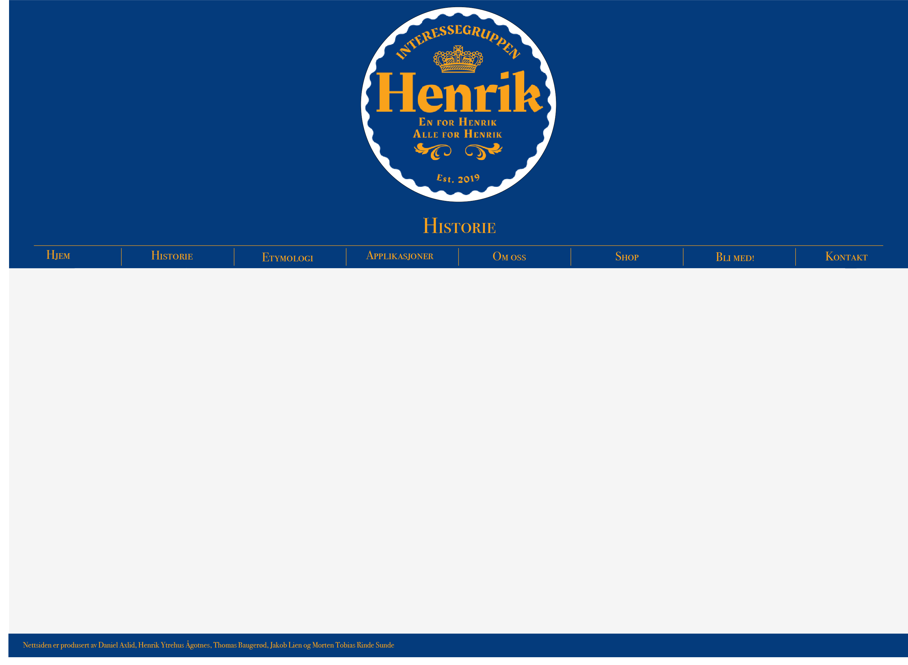
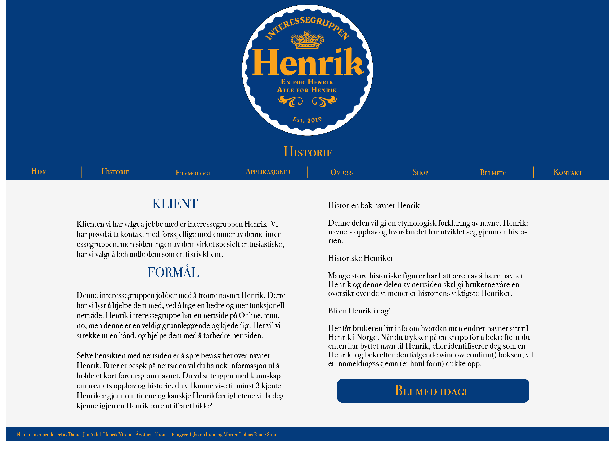
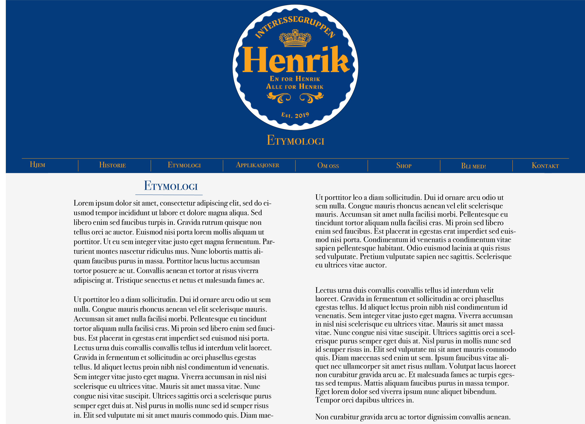
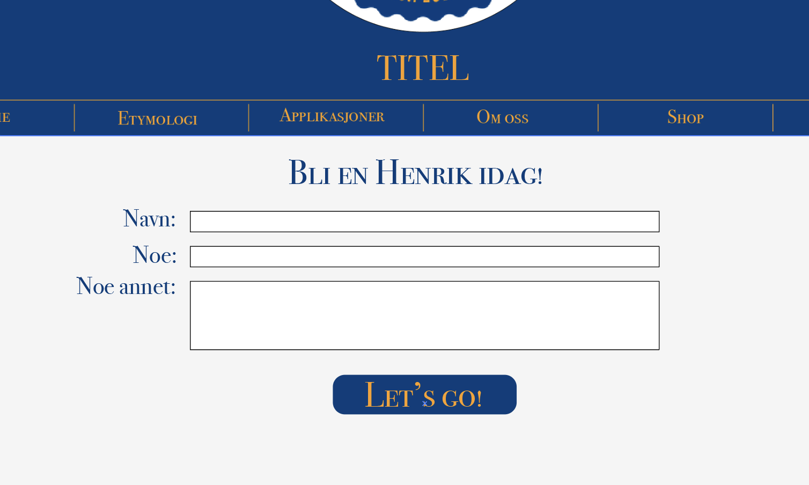
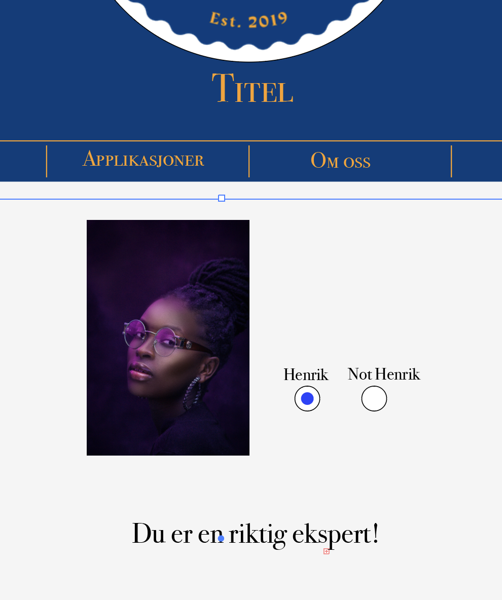
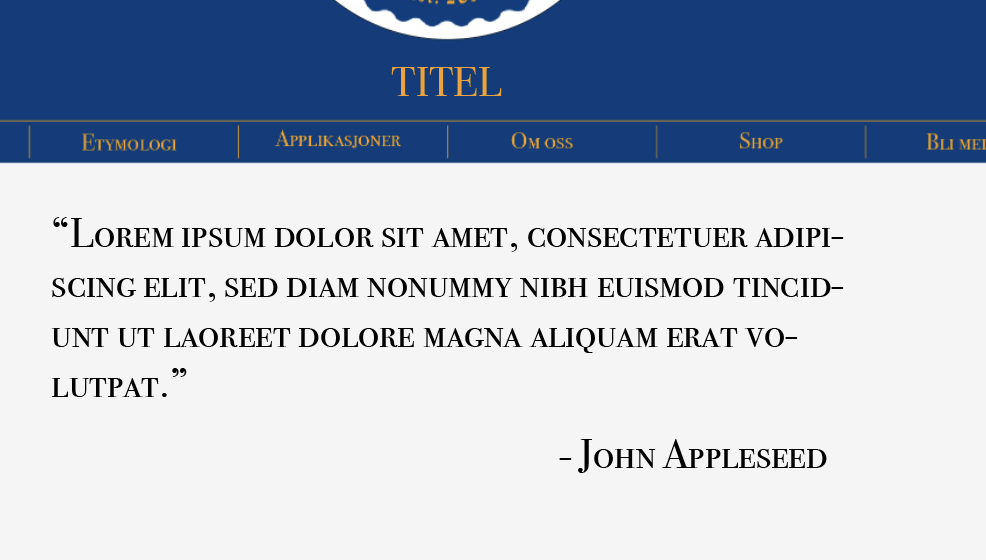

Klient
Klienten vi har valgt å jobbe med er interessegruppen Henrik. Vi har prøvd å ta kontakt med forskjellige medlemmer av denne interessegruppen, men siden ingen av dem virket spesielt entusiastiske, har vi valgt å behandle dem som en fiktiv klient.
Formål
Vårt mål med denne nettsiden er å hjelpe Henrik interessegruppen med å fronte navnet Henrik. Vi vil hjelpe dem med å forbedre nettsiden deres, til noe som er mer fungerende og fengende. En bedre nettside vil hjelpe dem med å fronte navnet henrik, gjøre navnet mer anerkjent og skape et godt rykte. Etter et besøk på nettsiden vil du sitte igjen med diverse kunnskaper om navnet Henrik, mer enn du visste fra før. Interessegruppen ble startet med et glimt i øyet og de er ganske uformelle og lite selvhøytidelige. Nettsiden trenger altså ikke være veldig formell. En typisk bruker av nettsiden vil enten være medlemmer av interessegruppen Henrik, folk som er interessert i navnet, eller informatikkstudenter ved NTNU som på en eller annen måte har oppdaget gruppen.
Navigasjon
Nettsiden skal være enkel å navigere seg gjennom. Dette er fordi den primære funksjonen er å fange interessen til brukeren, og potensielt holde brukeren på nettsiden, forhåpentligvis lenge nok til at brukeren har bevissthet over navnet Henrik. Alle sider skal inneholde en identisk navigasjonsbar i header, slik at brukeren skal kunne nå hver side fra hvor som helst på 1-2 museklikk. I header vil det også være en henrik logo som linker brukeren tilbake til forsiden. Dette betyr at uansett hvor man er i nettsiden, vil det være lett tilgang til hovedsiden.
Forsiden/hovedsiden vår skal gi en kort oversikt over hva de kan forvente av nettsiden. Det vil informere om innholdet vårt og dermed fungere som en veiledning til alle sidene. Det vil også gi et grovt innblikk i diverse ting, som «Om Henrik interessegruppen».
Sideoppsett og utseende
Bagrunnen på siden vil være svakt grå, noe som passer veldig fint med "Henrik-fargene" som nevns litt senere i denne tekst. Vi har gått gjennom mange alternativer for skrifttype, og har funnet en som er både innbydende å se på og lett å lese. Den heter “Bodoni 72 smallcaps book” for headers og navbar, og “Bodoni 72 Oldstyle Book” for all annen tekst. Størrelsen på teksten vil være 70 for headeren på siden, 50 på navbaren, og 40 for resten av siden. Vi har også funnet at siden får en mer organisert og oversiktlig struktur om vi har to kolonner på sider med mye tekst. Fargene på siden komme til å være gul og blå, i nyanser som vi tar fra Henrik-logoen (som vi i vår tur har fått fra den “ekte” Henrik-siden på Online sin nettside). Tekst i paragrafer kommer til å være svart. Headeren kommer til å være ganske høy, med blå bakgrunn, med Henrik logoen midt på. Når man klikker på den, kommer man til startsiden. Navbaren har et enkelt design, med “Henrik”-gule streker som deler opp nedre delen av den blå bakgrunnen i seksjoner. De gule strekene går ikke hele veien fra kant til kant, for å gi et friskt inntrykk. Footeren vil være “Henrik-gul” tekst mot en smal, blå bakgrunn. Designet gjør nettsiden enkel å lese, og er meint å gi et minimalistisk, men lekfullt inntrykk, som godt beskriver målet med siden.
Her er en bilde som viser nettsidens universale element, som header, navbar, footer, farger og font:
Innhold
Ting vi vi garantert har med
Forside
Forsiden vil være det første som dukker opp når brukere besøker nettsiden. Dette vil være nye brukeres første møte med siden og derfor er det viktig at man ikke blir overveldet av tekst og annen informasjon, og at man i løpet av kort tid skal kunne forstå hva siden handler om. Det er også viktig at vi klarer å fenge nye brukere til å utforske nettsiden videre. Dette skal vi oppnå gjennom et enkelt og minimalt, men likevel gripende, design. Forsiden skal inneholde en tekst som skal, på en så konsis måte som mulig, gi brukerne nok informasjon til at de ønsker å utforske siden videre. Vi vil sikte på å plassere denne teksten lenger nede på nettsiden for å gjøre forsiden enkel og oversiktlig.
Etymologi
Målet med denne teksten er at vi skal uttrykke mye av navnets historie, og hvordan navnet har endt opp i dag. Her har vi planlagt å ha nok tekst til å kunne gjennomføre dette. men ikke mer enn nødvendig. Vi ønsker også å ha noen få bilder som viser til forskjellige Henriker. Hovedattraksjonen på denne siden vil være en liste med navnet Henrik på flere forskjellige språk. Navnet Henrik blir uttalt forskjellige fra land til land, dette vil vi vise på en måte at brukeren blir interessert i siden. Derfor planlegger vi at hver gang du trykker på et av navn, vil det være en lydfil som uttaler navnet på det språket du ønsker.
Henrik er et navn som gått gjennom mange tidsperioder, og det brukes fortsatt jevnlig. Det var vanlig at tyske konger og tysk-romerske keisere hadde dette navnet. Det er opprinnelig fra navnet Heinrich, som er nedertysk form av gammelhøytysk mannsnavnet. Navnets betydning er «hjemmets hersker», og ble kanskje derfor navnet på mange store konger som har vært gjennom tidene. Henrik har også vært med å påvirke mange av de svenske etternavnene som; Henriksson, Henricson og de danske og norske etternavnene som Henriksen og Hendriksen. Navnet var ikke alltid vanlig i norge, det ble mer og mer vanlig navn i Norge og Sverige rundt 1200-tallet. I middelalderen var det et helt vanlig navn, og det har verdt populært lenge, og etter ett lite fall i bruk av navnet, tok det seg opp og ble populært igjen i 1990.
Historiske Henriker
Målet med denne siden er at leserne skal kjenne til og kunne greie ut om noen av historiens viktigste Henriker. Ettersom målgruppen er informatikk-studenter har vi planlagt å ha store bilder og lite tekst. Sidens utforming vil derfor bli tilsvarende en lysbildefremvisning med ett bilde og en eller to avsnitt for hver Henrik. Teksten skal være skrevet på en humoristisk og overdreven måte. Følgende er tre smakebiter på Henriker vi skal skrive om:
- Henrik VIII av England: Skilt, halshugget, døde, skilt, halshugget, overlevde.
- Henrik Wergeland: En temmelig oppskrytt dikter. Rival av Welhaven og hadde et forhold med søsteren til Welhaven.
- Henrik Ibsen: Den største norske Henriken. Fantastiske drama som Vildanden og Hedda Gabler fortsetter å imponere elever på videregående den dag i dag. Ettersom målgruppen allerede kjenner Ibsen er det ingen grunn til å gå for nøye til verks her.
Bli en Henrik i dag
Hovedattraksjonen her skal være et enkelt HTML skjema som kunne blitt brukt for å registrere medlemmer av interessegruppen. Det skal være skjult bak en bekreftelse på at brukeren enten heter eller identifiserer seg som en henrik. (kanskje dukke opp 403: forbidden om ikkje) Deretter skal skjemaet kunne valideres med Javascript, også skal brukeren få muligheten til å sende resultatene inn via en ferdig utfylt e-post.
Et felt kan også være ikke-redigerbart, og bestemt av hvordan brukeren kom seg på nettsiden. Der vil det enten stå “ekte Henrik” eller “Henrik på innsiden” eller om de fikk 100% på Henrik or Not kan de linkes til denne siden og da hadde det stått “Henrik-kjenner”, ved å sette.
Ting vi har med om vi har kapasitet
Henrik or Not
Her skal brukeren bli vist en mengde bilder av folk, både Henrik-er og andre, også skal brukeren vurdere i hvilken grad denne personen er en Henrik. Om de får 100% på testen skal det åpnes en ny side der de kan melde seg inn i Henrik Interessegruppen som en “Henrik-kjenner” For å oppnå dette vil vi bruke et slideshow hvis det fungerer godt, eller så vil vi ha hvert bilde med radio buttons ved siden av for å avgi svar. Uansett vil vi under ha en avgi svar knapp.
Sitat av Henrik
Her skal brukeren bli vist en mengde bilder av folk, både Henrik-er og andre, også skal brukeren vurdere i hvilken grad denne personen er en Henrik. Om de får 100% på testen skal det åpnes en ny side der de kan melde seg inn i Henrik Interessegruppen som en “Henrik-kjenner” For å oppnå dette vil vi bruke et slideshow hvis det fungerer godt, eller så vil vi ha hvert bilde med radio buttons ved siden av for å avgi svar. Uansett vil vi under ha en avgi svar knapp.
Minstekrav
Vi vil sannsynligvis ha mest javascript på innmeldingsskjemaet. Først skal vi ha to knapper ved siden av hverandre, der brukeren kan bekrefte enten at de heter Henrik, eller at de identifiserer seg som en Henrik. Når brukeren har krysset av ett av de to svaralternativene dukker skjemaet opp, for eksempel ved at man via javascript endrer display property av form elementet.
På innmeldingsskjemaet skal vi ha en send-knapp som skal gjøre html form validation, altså sjekke at brukeren har fylt inn alt det obligatoriske, og gitt gyldige svar(at alder er et tall større enn null og mindre enn verdens eldste person o.l.), og hvis det er gyldig utfylt, vil det være en knapp der javascripten fyller inn mailto informasjonen i en link, slik at brukeren kan sende svarene sine via epost. Her kan vi også lage en knapp som bare tømmer hele skjemaet.
Vi vil også gjerne bruke javascript på etymologisiden, for der vil gjøre det slik at når brukeren holder musepekeren over ett navn, vil det spilles av en uttaleguide for det navnet. Dette vil vi oppnå ved å bruke onmouseover property til å kalle på en funksjon, som bruker javascript for å spille av et skjult html audio element. Vi har testet at dette fungerer til tross for at audio elementet har display: none!
Om vi ender opp med å lage Henrik or Not blir det selvfølgelig en del javascript der også, men det virker ikke spesielt komplisert. Da trenger vi bare at koden skal produsere en score som den så setter på bunnen etter brukeren trykker sjekk svar. Det hadde også vært mulig å endre bakgrunnen til enten rød eller grønn, basert på om svarene er riktige eller gale. Så skal den sette inn en prosent som indikerer hvor bra brukeren gjorde det, og kanskje til og med dukker det opp en stor bokstav(A, B, C), som indikerer hvilken karakter brukeren hadde fått ut ifra hvor mange rette svar de har.
Om vi ender opp med å lage Sitater av Henrik kommer vi til å gjøre det på denne måten. Vi definerer en todimensjonal array i javascript som inneholder hvilken Henrik som er kreditert sitatet, og deretter hva sitater er. Deretter vil sitatene dukke opp med formatering via å endre htmlen med .innerHTML. Vi kan også bruke .onLoad() for å kjøre koden med en gang brukeren laster inn nettsiden, slik at den ikkje blir så tom, og når brukeren trykker hvor som helst på siden erstattes sitatet med et annet ett.
Oppsett
For å fordele ansvaret over de forskjellige deloppgavene som må utføres for å lage denne nettsiden, har vi laget et regneark som deler inn ansvar etter filer. Vi har fordelt ansvaret slik at det er en hovedansvarlig per fil. De som er oppført som hovedansvarlig skal ikke alene utføre alle oppgaver knyttet til filen, men de har ansvaret for at filen blir ferdig i tide. Her følger en oversikt over mappestrukturen, sammen med et utklipp av det nevnte regnearket.
- index.html
- historiske_henriker.html
- etymologi.html
- bli_en_henrik.html
- sitater.html
- henrik_or_not.html
- css/
- style.css
- js/
- etymologi.js
- henrik_or_not.js
- bli_en_henrik.js
- sitater.js
- historiske_henriker.js
- media/
- images/
- henrik_or_not_images/
- historiske_henriker_images/
- logo.png
- videos/
- sound_files/
- images/
Nettsidens URL
Når vi er ferdig kommer denne nettsiden til å ligge på: http://folk.ntnu.no/danielax/.